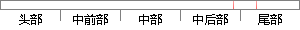

在训练集上的误判率为0.
片段位置图

相似结果|
相似片段 1：，训练误判率 ε 随训练轮数 T 的增大呈指数级的减小。从而定理2.1说明了如果每个弱分类器误判率都仅比0.5小一点，那么最终强分类器H(x) 的训练误判率将以指数形式逐渐衰减为0. 因此对于两类分类问题，只需要弱学习算法的准确性略好于随机猜测，便可以保证Adaboost算法是收敛的。
相似片段 2： 0. 71 . 丫 .冲量用子0 0. 1 0. 3 0.5 0. 7 (b)不同冲量因子的系统误差及误判率分布图其中网络训练时的系统误差和测试过程中的误判率的变化趋势见图6一8。比较图6-8(a
相似片段 3：。从树的根结点开始，计算每个分枝结点被剪也即被叶替代后的误判率。采用训练数据集作为测试集，取置信区间的上限43作为对误判率的估计。给定一个显著性水平度α=0. 25，显然错误的总数服从二项分布，则有
相似片段 4：的misclassification的数字也反映了这个趋势，(训练集的重置率)这一列由具有两个叶节点时的 0. 583率到具有21个叶节点时的0. 189的重置率。最优树之后的树在对训练集拟合程度提高的同时也是对新数据预测能力
相似片段 5：的目的，利用基于 BPNN的模型来处理将训练集和增量集合并后的肽集。BPNN的结构是 180-4-1 型。其激活函数为 Sigmoid型。学习率和动量因子分别为 0. 2 和 0. 9。对于同样的检测
相似片段 6：结构情况进行比较，表 )给出了计算结果。表 ) 两种不同模型计算结果的比较隐层节点数(本文模型 未加权的 1#网络训练误差 训练次数 误判率 训练误差 训练次数 误判率
相似片段 7：归一化处理.设定学习率 ! = 0. 05，惯性项系数 " =0. 6，网络迭代停止阈值 Eav"0. 02，按如上算法进行网络训练.经 660 37l 次迭代后，样本模拟值与目标值的相关系数为 0.
相似片段 8：的神经网络模型结构配置为18×26×5。表3-1隐层节点的确定隐层节点 训练总体误判率 训练次数 检验总体误判率18 0．015 682 0．28820 O．015 707 O．23l22 O．02 736
相似片段 9： 误判率 误判率0.342105 0.181818 0.2176470. 289474 0. 204545 0. 2235290. 368421 0. 19697 0. 2352940. 236842
|
※ 片段修改建议 ※
近似词参考：- 训练：练习
系统自动生成语句：在练习集上的误判率为0.
注：本片段修改建议为系统自动生成，仅供参考。